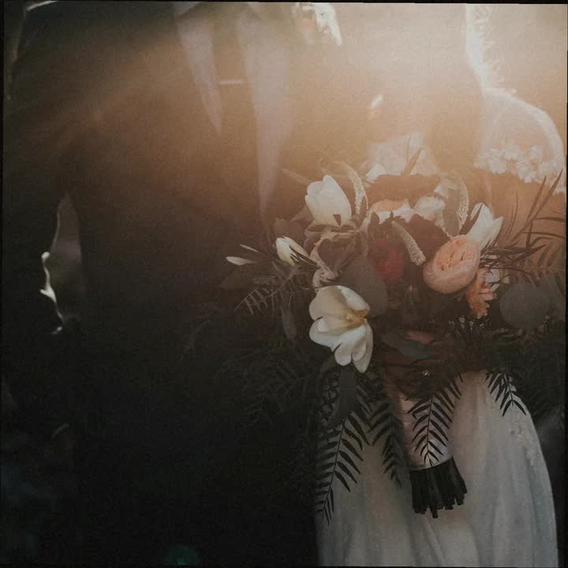
Mara Ellison — contact · roll 07
Pull strip · roll 07A
▲ KODAK · PORTRA 400 · ROLL 07A07A1–07A5
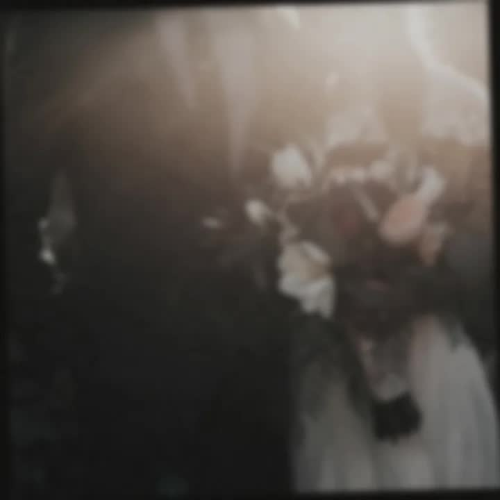
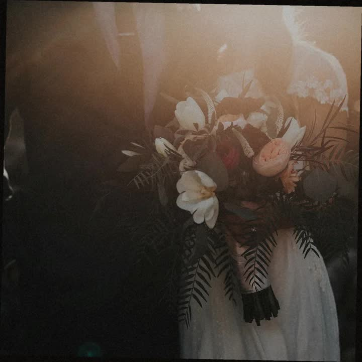
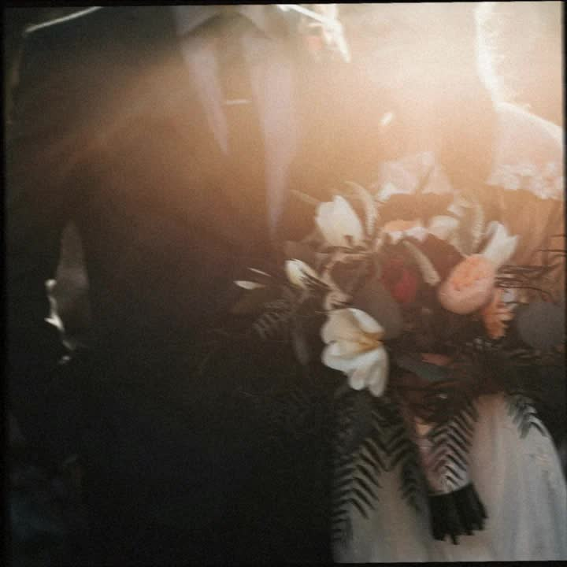
Pull strip · roll 07B
▲ KODAK · PORTRA 400 · ROLL 07B07B1–07B5
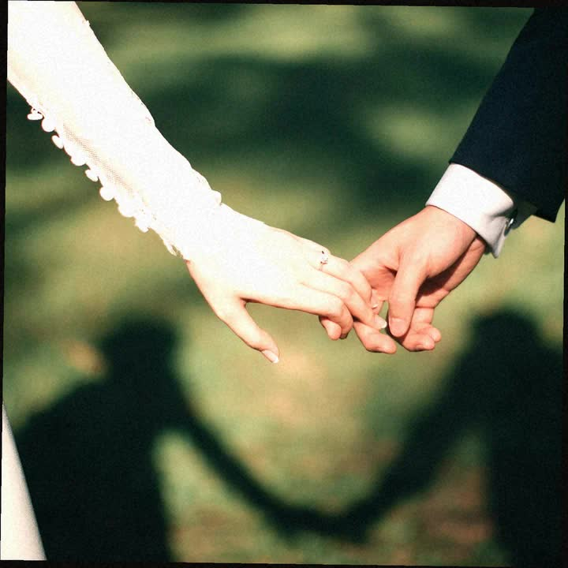
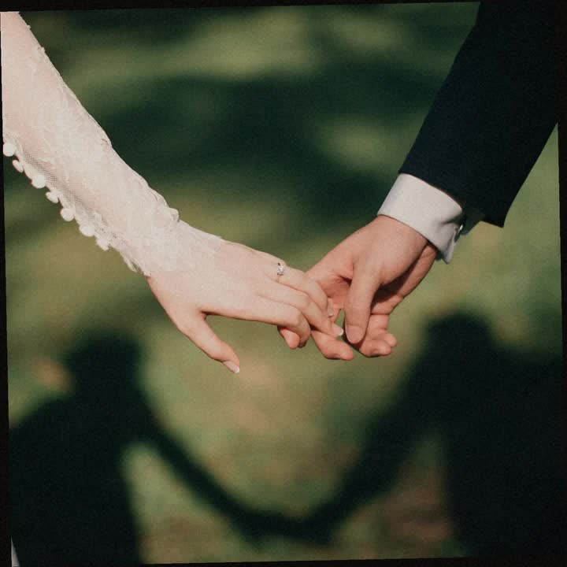
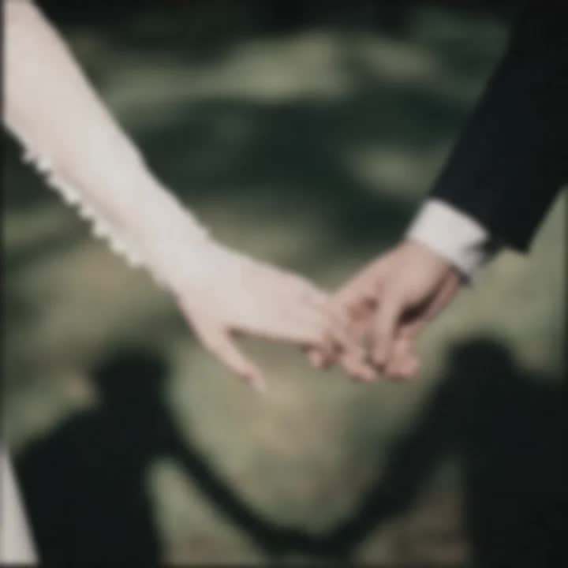
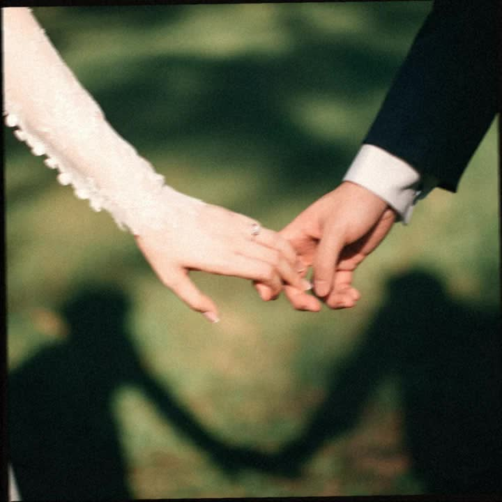

loupe · 07B1
Pull strip · roll 07C
▲ KODAK · PORTRA 400 · ROLL 07C07C1–07C5
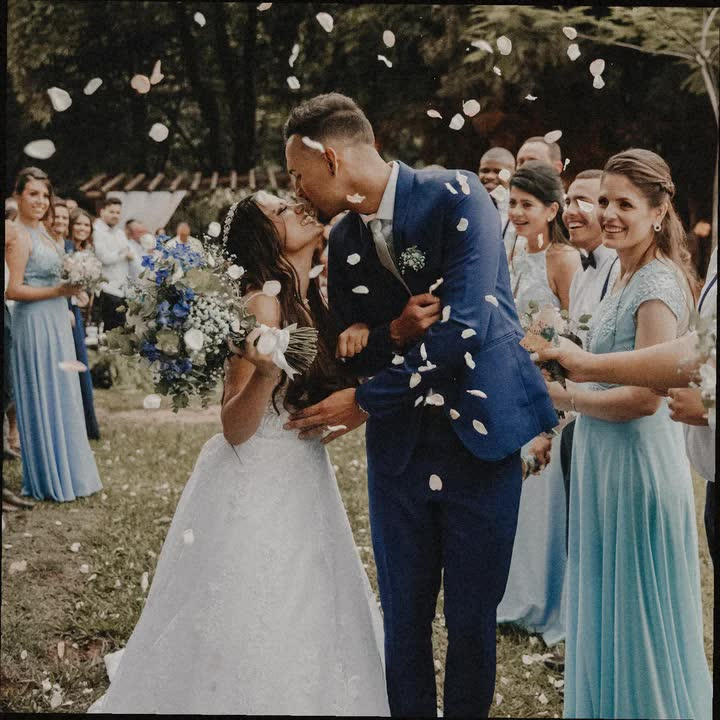
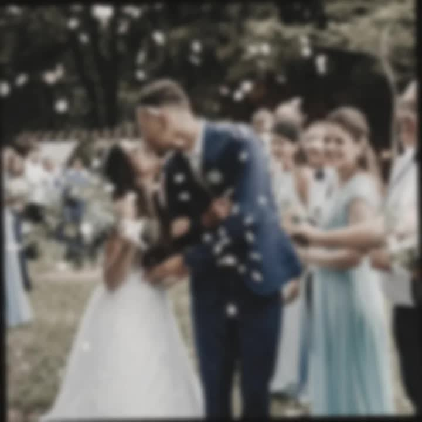
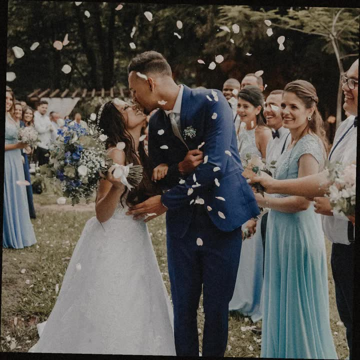
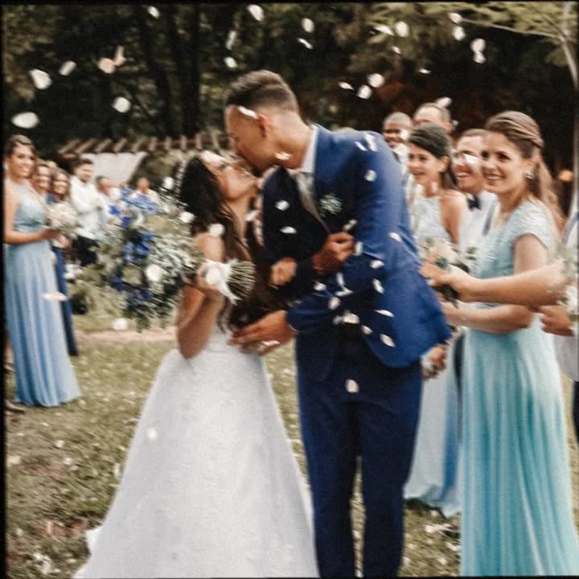
Enquire
Hold these frames.
Write me a date and who should be in them. I will answer by email.
hello@maraellison.exampleNot a shortlist
I mark keeps in grease pencil, not hearts. Keeps on this sheet: 07A2 · 07B1 · 07C3.
I am a fictional photographer for this example. The email is a sample address.